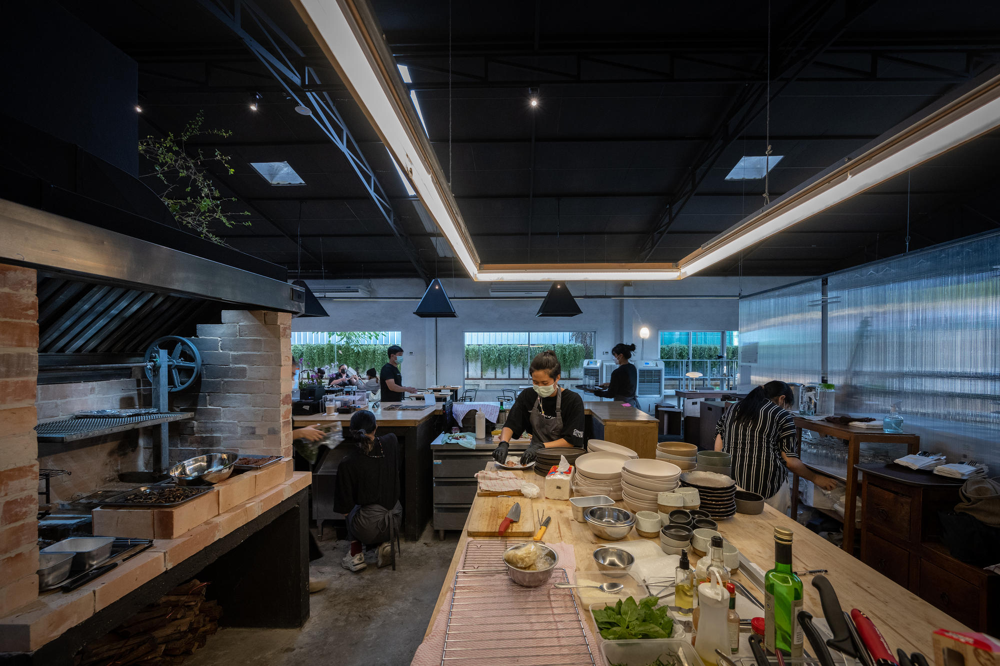

Experience Our Ambience
At Urban Plate, we believe the dining experience is more than just food. Our restaurant features a chic, modern design with warm lighting, comfortable seating, and an open kitchen where you can watch our chefs at work.

Our spacious dining area offers a comfortable setting, perfect for a casual meal or a special occasion.

The warm lighting creates a cozy atmosphere, making your dining experience more intimate and enjoyable.

Watch our chefs prepare your meal in the open kitchen, adding an interactive element to your dining experience.
Watch our chefs prepare your meal in the open kitchen, adding an interactive element to your dining experience.